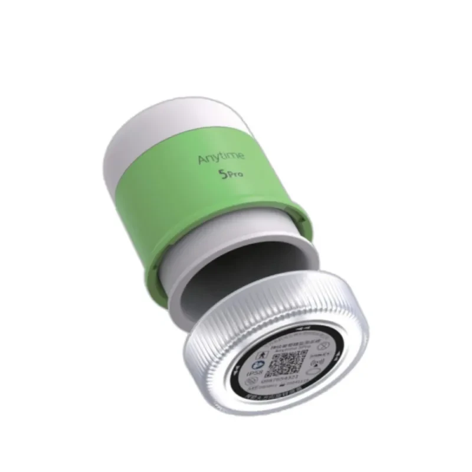
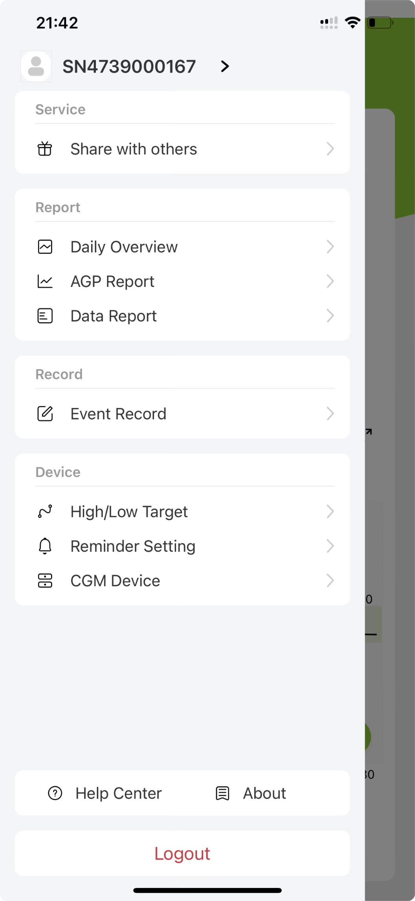

Everyday diabetes careWear it. Check trends. Keep living.
Modern tools for diabetes, blood pressure, heart health and chronic care — designed to make everyday monitoring simpler, clearer and more connected.

Continuous glucose monitoring repeatedly measures glucose throughout the day, helping reveal direction, patterns and changes over time instead of relying only on occasional single readings.


CGM supports monitoring and trend awareness. It does not replace diagnosis, emergency assessment or professional medical advice.
Shop and learn by condition, not by confusing technical categories.
CGM and home monitoring tools for clearer daily decisions.
Explore →Track hypertension trends with dependable home devices.
Explore →Stay closer to the signals that shape cardiovascular wellbeing.
Explore →Bring connected chronic-care monitoring into everyday life.
Explore →
Explore the range. Ask about pricing, availability and compatibility before you choose.
6 devices
Glucose monitoring for everyday diabetes care.
 Yuwell · Blood pressure
Yuwell · Blood pressure
Upper-arm blood-pressure monitoring at home.
 Yuwell · Pulse & oxygen
Yuwell · Pulse & oxygen
Spot checks of oxygen saturation and pulse rate.
 Yuwell · Respiratory support
Yuwell · Respiratory support
Home oxygen equipment for a prescribed care plan.
 Yuwell · Respiratory care
Yuwell · Respiratory care
Nebuliser equipment for prescribed inhalation therapy.
 Yuwell · Temperature monitoring
Yuwell · Temperature monitoring
Infrared temperature checks for home care.
No devices match your search. Clear the search or try a broader category.
Regular home blood-pressure and heart monitoring can make trends easier to spot and conversations with healthcare professionals more useful.
Explore heart health →Pair continuous glucose insight with practical home monitoring so everyday decisions are supported by richer information.
Explore diabetes care →Health technology supports the bigger picture: movement, family time and everyday activity.


HomeClinicStore’s biomedical engineering support is specifically for home medical equipment sold or supported by HCS. The service is managed online: book support, arrange logistics, follow service progress and download your completed service records from one place.
Guidance for setup, accessories, basic configuration and supported connectivity for home-use devices.
Remote technical support for common home-device issues, operation questions and supported software/connectivity problems.
Book remote setup sessions, troubleshooting, follow-up support, maintenance or calibration where applicable.
Schedule eligible home-device checks and calibration support without presenting HCS as a hospital or laboratory engineering service.
Arrange pickup, delivery, return, repair logistics and replacement/accessory coordination for supported home equipment.
Track the service journey, receive status updates and coordinate the next step online.
Download applicable calibration certificates, service certificates and completed technical records after the work is closed.
Access service reports, inspection records, maintenance records and device-history documents where provided.
Get help identifying compatible cuffs, sensors, filters, masks and other supported home-device accessories.
Remote setup, troubleshooting, maintenance follow-up and eligible calibration bookings are initiated online.
Start a booking ↗For work that cannot be completed remotely, HCS can coordinate the equipment journey for supported home devices.
Arrange logistics ↗Applicable service certificates, calibration certificates and service reports are made available after completion.
Request service records ↗Scope: home medical equipment only. Services and downloadable certificates depend on the device, work completed and applicable verification requirements.
Build an enquiry list to discuss devices, pricing and support with HomeClinicStore.
Downloads a text file. No order is placed or message sent.